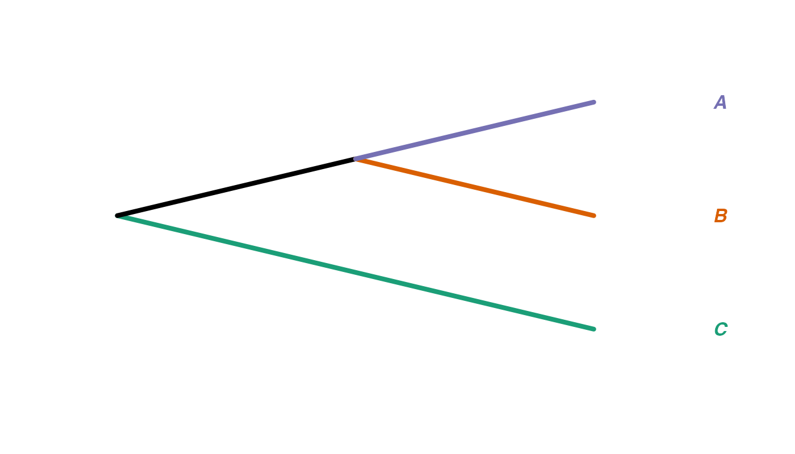

Comparing trees by tip label categories
Michelle Kendall
2019-12-13
Source:vignettes/tipCategories.Rmd
tipCategories.RmdWe introduce distance measures between trees with ‘related’ tip labels in a recent bioRxiv preprint, Comparing phylogenetic trees according to tip label categories. Here we provide an overview of the measures and present some simple examples.
# load treespace and packages for plotting:
library(treespace)
library(RColorBrewer)
library(ggplot2)
library(reshape2)
# set colour scheme
pal <- brewer.pal(3,"Dark2")Suppose you have a tree with taxa labels which correspond to some broad “categories” and you want to compare it to other tree(s) whose taxa also correspond to those categories. If the tip labels of the trees do not match exactly then the other metrics supplied in treespace cannot be applied. The function relatedTreeDist is a version of treeDist (the Kendall Colijn metric) which compares tip labels at their category levels, and treeConcordance is a measure of how “concordant” a tree is to a reference tree linking the categories, as we shall explain below.
Some examples of instances where we may wish to compare trees with such labels:
| Categories | Individuals |
|---|---|
| Bacterial sub-types e.g. serogroups | Bacterial isolates |
| Species | Orthologous genes |
| Host | Deep sequencing reads of pathogen |
| Protein families | Proteins |
| Population groups | Individual organisms |
| Disjoint features or phenotypes | Individual organisms |
| Broad taxonomy | Individual organisms |
Related tree distance
We begin by demonstrating the measure between trees with related tip sets, relatedTreeDist. As an example, suppose we have trees created from deep-sequencing reads from patients A, B and C as follows:

We can think of “collapsing” these trees down to one tip per monophyletic clade of tips from the same category, and renaming the new tips with just the category labels. For example, the trees above would collapse into these, respectively:

We calculate the distance between the original trees using relatedTreeDist as follows. The function requires a data frame telling it which individuals belong to which categories:
## [,1] [,2]
## [1,] "Patient A" "Patient A read 1"
## [2,] "Patient A" "Patient A read 2"
## [3,] "Patient A" "Patient A read 3"
## [4,] "Patient B" "Patient B read 1"
## [5,] "Patient B" "Patient B read 2"
## [6,] "Patient B" "Patient B read 3"
## [7,] "Patient C" "Patient C read 1"
## [8,] "Patient C" "Patient C read 2"
## [9,] "Patient C" "Patient C read 3"
## [10,] "Patient C" "Patient C read 4"## [1] 0.7071The function relatedTreeDist can take a list of many trees as input, and it produces a distance matrix giving the distances between each pair of trees. Since we only supplied two trees, we just returned the first (only) element of this matrix.
We now explain how this value is calculated. We find the mean height of the most recent common ancestor (MRCA) of each pair of categories in the collapsed trees. That is, we effectively find all the pairwise depths of MRCAs:
## tip1 tip2 rootdist
## [1,] "Patient A" "Patient B" "1"
## [2,] "Patient A" "Patient C" "0"
## [3,] "Patient B" "Patient C" "0"## tip1 tip2 rootdist
## [1,] "Patient A" "Patient B" "0"
## [2,] "Patient A" "Patient B" "1"
## [3,] "Patient A" "Patient C" "0"
## [4,] "Patient B" "Patient B" "0"
## [5,] "Patient B" "Patient C" "1"
## [6,] "Patient B" "Patient C" "0"then reduce these down to an average depth per pair of (different category) tips, per tree:
## tip1 tip2 Tree 1 Tree 2
## [1,] "Patient A" "Patient B" "1" "0.5"
## [2,] "Patient A" "Patient C" "0" "0"
## [3,] "Patient B" "Patient C" "0" "0.5"and then we take the Euclidean distances between the final two columns:
\[ d(T_1,T_2) = \sqrt{ (1-0.5)^2 + (0-0)^2 + (0-0.5)^2 } = 0.7071068 \]
We now give a larger example with more trees. Along the way we use the function simulateIndTree which takes a “category-level” tree and randomly adds individuals to make an example individuals tree.
suppressWarnings(RNGversion("3.5.0"))
set.seed(948)
# set colour scheme
pal2 <- brewer.pal(8,"Dark2")
# create a "base" (category-level) tree
baseTree <- rtree(8)
baseTree$tip.label <- letters[8:1]
tree1 <- simulateIndTree(baseTree, itips=3, permuteTips=FALSE)
tree2 <- simulateIndTree(baseTree, itips=4, permuteTips=FALSE)
tree2$tip.label <- c(paste0("h_",2:5),paste0("g_",3:6),paste0("f_",c(2,3,7,9)),
paste0("e_",c(1,2,5,6)),paste0("d_",3:6),paste0("c_",5:8),
paste0("b_",c(3,5,6,9)),paste0("a_",c(1,4,8,9)))
tree3 <- simulateIndTree(baseTree, itips=4, tipPercent = 20)
tree3NotForPlotting <- simulateIndTree(baseTree, itips=4, permuteTips=FALSE) # just for setting colours later
tree4 <- simulateIndTree(baseTree, itips=6)
tree4NotForPlotting <- simulateIndTree(baseTree, itips=6, permuteTips=FALSE)
# create another base tree
baseTree2 <- rtree(8, tip.label=letters[8:1])
tree5 <- simulateIndTree(baseTree2, itips=6, permuteTips=FALSE)
tree6 <- simulateIndTree(baseTree2, itips=6, tipPercent=30)
# set up colour palettes
tipcolors3 <- c(rep(pal2[[1]],3),rep(pal2[[2]],3),rep(pal2[[3]],3),rep(pal2[[4]],3),rep(pal2[[5]],3),rep(pal2[[6]],3),rep(pal2[[7]],3),rep(pal2[[8]],3))
tipcolors4 <- c(rep(pal2[[1]],4),rep(pal2[[2]],4),rep(pal2[[3]],4),rep(pal2[[4]],4),rep(pal2[[5]],4),rep(pal2[[6]],4),rep(pal2[[7]],4),rep(pal2[[8]],4)) # colours for 4 tips
tipcolors6 <- c(rep(pal2[[1]],6),rep(pal2[[2]],6),rep(pal2[[3]],6),rep(pal2[[4]],6),rep(pal2[[5]],6),rep(pal2[[6]],6),rep(pal2[[7]],6),rep(pal2[[8]],6)) # colours for 6 tips
# prepare tip colours for plotting
tree3TipOrder <- sapply(tree3$tip.label, function(x) which(tree3NotForPlotting$tip.label==x))
tree4TipOrder <- sapply(tree4$tip.label, function(x) which(tree4NotForPlotting$tip.label==x))
tree5TipOrder <- sapply(tree5$tip.label, function(x) which(tree4NotForPlotting$tip.label==x))
tree6TipOrder <- sapply(tree6$tip.label, function(x) which(tree4NotForPlotting$tip.label==x))
layout(matrix(c(1,4,2,5,3,6), 2,3))
plot(tree1, tip.color=tipcolors3, no.margin=TRUE,
edge.width = 4, use.edge.length = FALSE,
label.offset= 0.5, font=4, cex=2)
plot(tree2, tip.color=tipcolors4, no.margin=TRUE,
edge.width = 4, use.edge.length = FALSE,
label.offset= 0.5, font=4, cex=2)
plot(tree3, tip.color=tipcolors4[tree3TipOrder], no.margin=TRUE,
edge.width = 4, use.edge.length = FALSE,
label.offset= 0.5, font=4, cex=1.8)
plot(tree4, tip.color=tipcolors6[tree4TipOrder], no.margin=TRUE,
edge.width = 4, use.edge.length = FALSE,
label.offset= 0.5, font=4, cex=1.2)
plot(tree5, tip.color=tipcolors6[tree5TipOrder], no.margin=TRUE,
edge.width = 4, use.edge.length = FALSE,
label.offset= 0.5, font=4, cex=1.2)
plot(tree6, tip.color=tipcolors6[tree6TipOrder], no.margin=TRUE,
edge.width = 4, use.edge.length = FALSE,
label.offset= 0.5, font=4, cex=1.2)
We have created a variety of trees. Trees 1 and 2 have differing numbers of tips, and differing tip labels, but their collapsed forms would be identical. Tree 3 is similar to Trees 1 and 2 but with a few tips permuted, so that the categories are no longer monophyletic. Tree 4 is similar but with more tips permuted. Trees 5 and 6 were created from a different “base” tree so the relationships between the categories are quite different when we compare, for example, Tree 1 and Tree 5.
The function relatedTreeDist gives a quantitative description of these similarities and differences. First we just put the trees into a list and create a data frame linking individuals to categories:
trees <- list(tree1,tree2,tree3,tree4,tree5,tree6)
df <- cbind(sort(rep(letters[1:8],9)),sort(paste0(letters[1:8],"_",rep(1:9,8))))
dists <- relatedTreeDist(trees,df)
dists## 1 2 3 4 5
## 2 0.000
## 3 2.131 2.131
## 4 5.322 5.322 5.210
## 5 7.141 7.141 6.886 6.615
## 6 6.195 6.195 5.939 4.700 2.437We can visualise these distances with a heatmap:
dists <- as.matrix(dists)
colnames(dists) <- rownames(dists) <- c("Tree 1", "Tree 2", "Tree 3", "Tree 4",
"Tree 5", "Tree 6")
melted_dists <- melt(dists, na.rm=TRUE)
ggheatmap <- ggplot(data = melted_dists, aes(Var2, Var1, fill = value))+
geom_tile(color = "darkgrey")+
scale_fill_gradient2(low = "white", high = "firebrick2",
name="Tree distance") +
theme_minimal() + coord_fixed()
ggheatmap +
geom_text(aes(Var2, Var1, label = signif(value,2)), color = "black", size = 8) +
theme(
axis.title.x = element_blank(),
axis.title.y = element_blank(),
panel.grid.major = element_blank(),
panel.border = element_blank(),
panel.background = element_blank(),
axis.text = element_text(size=12),
axis.ticks = element_blank(),
legend.position = "none" )Concordance
The concordance measure takes a reference tree R whose tips are a set of categories (with no repeats), and a comparable tree T whose tips are individuals from those categories. The measure counts the proportion of tip pairs whose MRCA in T appears at the same place as the MRCA of their categories in R. It takes a value in (0,1]. Full concordance, where the collapsed version of T is identical to R, gives a value of 1.
For example,
catTree <- read.tree(text="(C,(B,A));")
indTree1 <- read.tree(text="(((c4,c3),(c2,c1)),((b1,b2),((a3,a2),a1)));")
indTree2 <- read.tree(text="(((c4,c3),(c2,c1)),((b1,a2),((a3,b2),a1)));")
indTree3 <- read.tree(text="((a3,(a2,a1)),((b1,c2),((c3,b2),(c1,c4))));")
plot(catTree, tip.color=pal,
edge.width = 4, type="cladogram",
label.offset= 0.5, font=4,
edge.color=c(pal[[1]],"black",pal[[2]],pal[[3]]))
layout(matrix(1:3,1,3))
plot(indTree1, tip.color=c(rep(pal[[1]],4),rep(pal[[2]],2),rep(pal[[3]],3)),
edge.width = 4, type="cladogram", no.margin=TRUE,
label.offset= 0.5, font=4, cex=2,
edge.color=c("black",rep(pal[[1]],6),"black",rep(pal[[2]],3),rep(pal[[3]],5)))
plot(indTree2, tip.color=c(rep(pal[[1]],4),pal[[2]],rep(pal[[3]],2),pal[[2]],pal[[3]]),
edge.width = 4, type="cladogram", no.margin=TRUE,
label.offset= 0.5, font=4, cex=2,
edge.color=c("black",rep(pal[[1]],6),rep("black",2),pal[[2]],pal[[3]],
rep("black",2),pal[[3]],pal[[2]],pal[[3]]))
plot(indTree3, tip.color=c(rep(pal[[3]],3),pal[[2]],rep(pal[[1]],2),pal[[2]],rep(pal[[1]],2)),
edge.width = 4, type="cladogram", no.margin=TRUE,
label.offset= 0.5, font=4, cex=2,
edge.color=c("black",rep(pal[[3]],4),rep("black",2),pal[[2]],pal[[1]],
rep("black",2),pal[[1]],pal[[2]],rep(pal[[1]],3)))
The first tree has monophyly per category, and the relative positions of those categories are identical to the reference tree. Correspondingly, the concordance is 1:
df <- cbind(c(rep("A",3),rep("B",2),rep("C",4)),sort(indTree1$tip.label))
treeConcordance(catTree,indTree1,df)## [1] 1The second tree is fairly similar to the reference, with category C monophyletic and basal to the rest. However, the paraphyly of categories A and B gives a concordance less than 1:
## [1] 0.8846Finally, the third tree has much less in common with the reference and accordingly has lower concordance:
## [1] 0.4615To give a broader feel for how the concordance measure behaves, we now perform an experiment where we create random trees and compare them to a reference. We permute the tips in the individuals trees by a given percent, and watch the concordance decrease as the permutations increase and the category-level relationships weaken. In the paper we report our findings for n=10 and reps=100, that is, the reference tree has 10 tips, individuals trees have n*n=100 tips, and we performed 100 repetitions for each level of permutation. To keep the calculations quick we only use n=5 and reps=10 here.
n <- 5
reps <- 10
reftree <- rtree(n, tip.label=letters[1:n])
indTrees <- lapply(rep(seq(0,100,20),reps), function(x)
simulateIndTree(reftree,itips=n,permuteTips=TRUE,tipPercent=x))
df <- cbind(sort(rep(letters[1:n],n)),sort(indTrees[[1]]$tip.label))
concordances <- sapply(indTrees, function(x) treeConcordance(reftree,x,df))
resultsTab <- as.data.frame(cbind(rep(seq(0,100,20),reps),concordances))
colnames(resultsTab) <- c("Percentage","Concordance")
resultsTab[,1] <- factor(resultsTab[,1], levels=seq(0,100,20))
plot <- ggplot(resultsTab, aes(x=Percentage, y=Concordance))
plot + geom_boxplot(aes(colour=Percentage)) + theme_bw() + guides(colour=FALSE) +
xlab("Percentage of tips permuted") + ylim(c(0,1)) +
theme(axis.text = element_text(size=18),
axis.title = element_text(size=18))